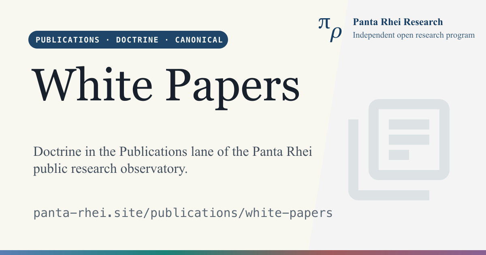

Panta Rhei Research Program
/
/

/agenda/

/agenda/construction-roadmap/

/agenda/core-design-principles/

/agenda/core-semantics/

/agenda/foundational-discipline/

/agenda/historical-context/

/agenda/kernel-model-reality/

/agenda/research-aim-and-desiderata/

/agenda/result-criteria/

/agenda/roadmap/

/agenda/science-humanities-and-coherence/

/agenda/structural-challenge-ledger/

/agenda/structural-challenge-ledger/source-policy/

/agenda/what-the-program-refuses/

/agenda/why-the-tau-framework/

/cite/

/corpus/

/corpus/bi-square/

/corpus/construction-spine/

/corpus/foundational-hinges/

/corpus/graph/

/corpus/how-to-read/

/corpus/monograph-corpus/

/corpus/registry/

/corpus/taulib/

/corpus/types/

/corpus/versioning/

/discover/

/discover/ai-assisted-discovery/

/discover/big-questions/

/discover/entry-routes/

/discover/follow-the-research/

/discover/guided-tours/

/discover/how-the-system-works/

/discover/key-results/

/discover/start-here/

/discover/what-to-read-first/

/engage/

/engage/collaborate/

/engage/contact/

/engage/critique-challenge/

/engage/discussions/

/engage/follow-the-research/

/engage/for-engineering-contributors/

/engage/how-to-engage/

/engage/inspect-verify/

/engage/media/

/engage/read-explore/

/engage/review-the-work/

/engage/seminars-and-guided-sessions/

/engage/support-the-research/

/impact/

/impact/applied-science-and-research/

/impact/by-domain/

/impact/by-horizon/

/impact/by-portfolio/

/impact/existential-orientation/

/impact/foundational-science/

/impact/global-education/

/impact/global-public-good/

/impact/impact-framework/

/impact/papers/

/impact/societal-coherence/

/media/

/program/

/program/about/

/program/why-this-work-matters/

/publications/

/publications/anchor-documents/

/publications/anchor-documents/c001-standing-in-the-inquiry-of-being/

/publications/anchor-documents/wp001-panta-rhei-research-program-executive-overview/

/publications/anchor-documents/wp002-t-theory-executive-synopsis/

/publications/anchor-documents/wp003-taulib-technical-overview/

/publications/anchor-documents/wp004-public-research-observatory-blueprint/

/publications/anchor-documents/wp005-global-public-good-impact-overview/

/publications/bibliography/

/publications/conspectus/

/publications/errata/

/publications/guided-tours/

/publications/monograph-supplements/

/publications/release-artifacts/

/publications/research-briefings/

/publications/research-monographs/

/publications/research-notes/

/publications/research-papers/

/publications/white-papers/

/results/

/results/additional-derived-results/

/results/additional-noteworthy-results/

/results/browse/

/results/by-book/

/results/by-domain/

/results/challenge-responses/

/results/classifications/

/results/core-semantics-status/

/results/cross-domain/

/results/falsifications/

/results/glossary-onboarding/

/results/how-to-read-a-result-page/

/results/landmark-results/

/results/predictions/

/results/progress-against-agenda/

/results/prologue/

/results/status-and-claim-typing/

/results/why-so-many-results/

/results/world-readout/

/search/

/sitemap/

/verify/

/verify/assessment-protocols/

/verify/assessments/

/verify/bridge-verification/

/verify/construction-spine-verification/

/verify/custom-axioms/

/verify/domain-verification/

/verify/filter-rules/

/verify/formal-verification-stack/

/verify/how-to-verify-by-role/

/verify/how-to-verify/

/verify/meta-verification-frontier/

/verify/predictions-and-falsification/

/verify/release-manifest/

/verify/scientific-rigor/

/verify/taulib/

/verify/tcb/

/verify/verification-framework/